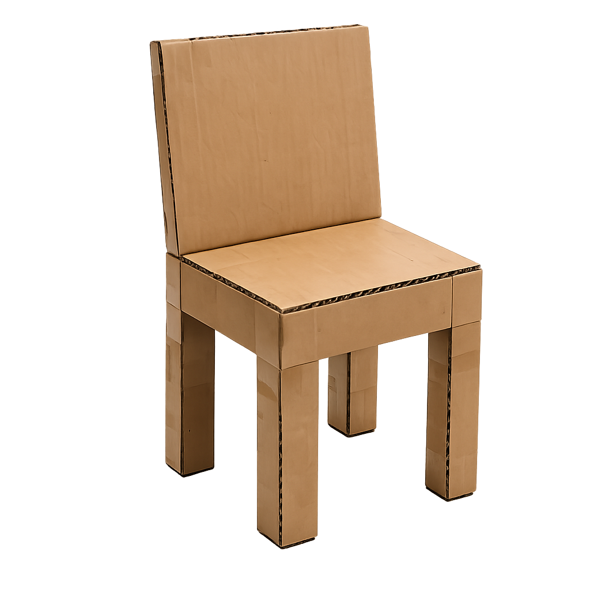
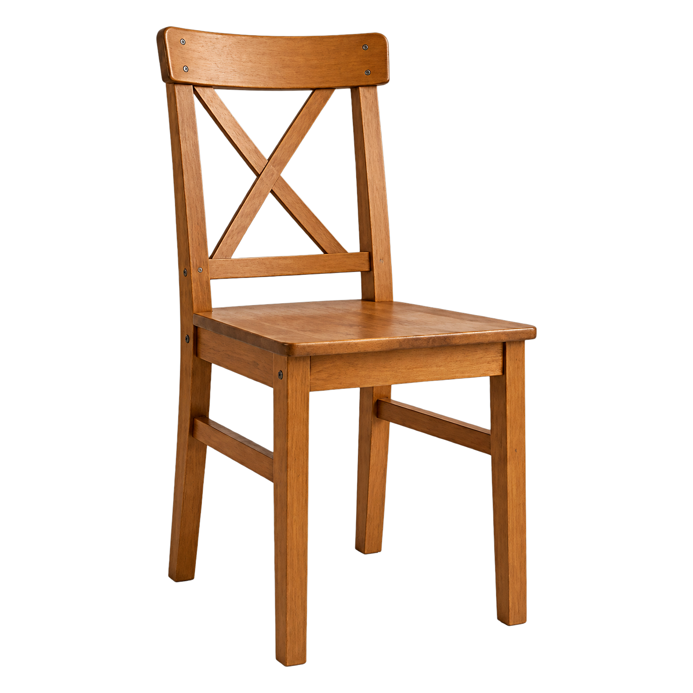
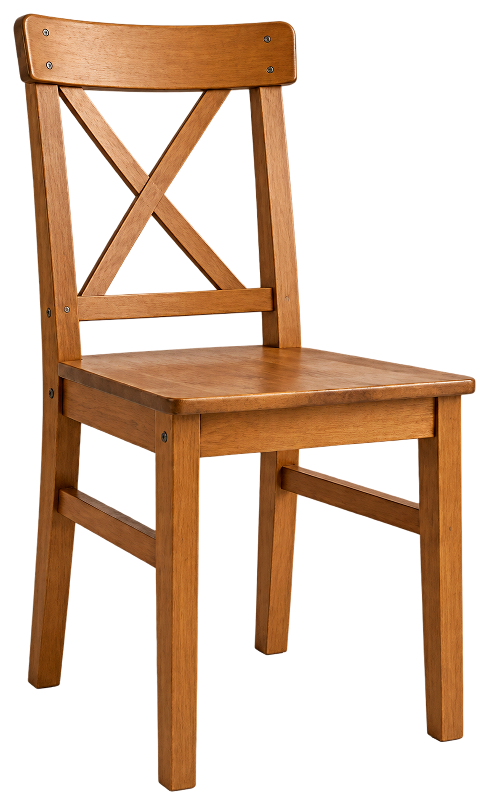
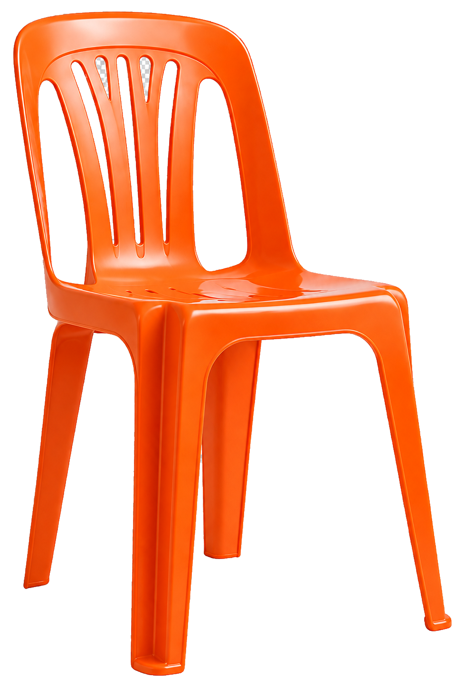
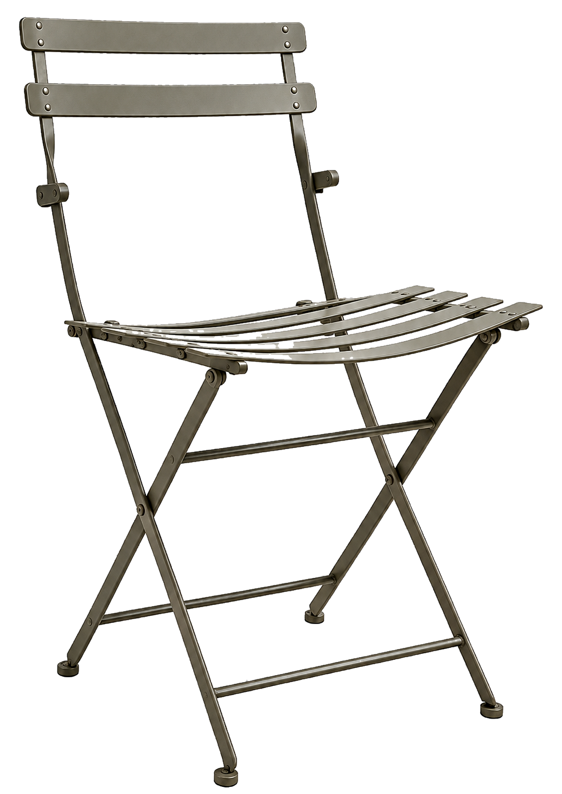
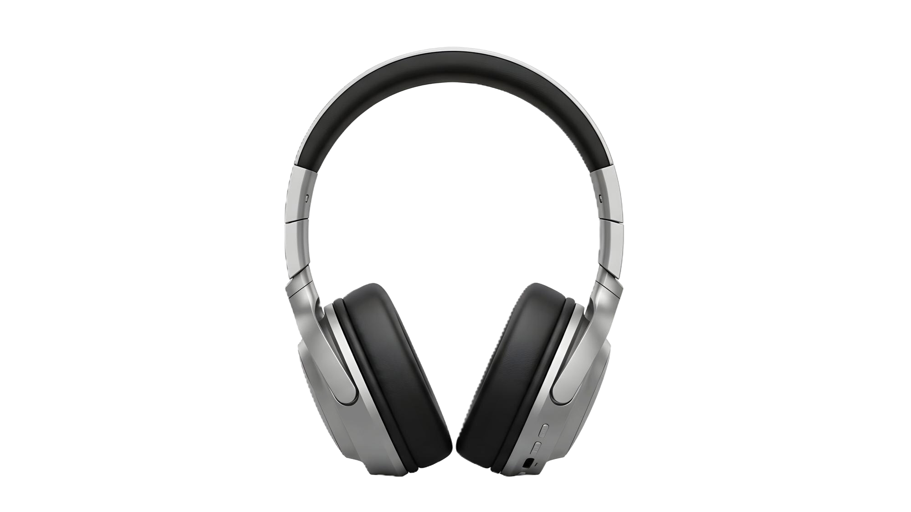

أي شخصية تريدون أن ترافقكم؟
تخيلوا أنكم تعيشون في عالم حيث
جميع
الأشياء مصنوعة من المادة غير المناسبة.
على سبيل المثال - مطرقة مصنوعة من الإسفنج أو قارب من الحجر.
اكتبوا مشكلة واحدة يمكن أن تحدث واشرحوا لماذا.
برأيي في عالم كهذا سيكون من الصعب معرفة كيفية استخدام الأشياء، لأن المواد لا تتناسب مع وظيفتها.

في هذه الوحدة سنتعلم النظر إلى المنتجات المألوفة بعيون العلماء والمهندسين:
لنتعلم عن الأجسام والمادة والخصائص
اختاروا كيف ترغبون في التعلم:
مشاهدة فيديو قصير
أقرأ بنفسي
ما العلاقة بين جذع شجرة وكرسي، وما الذي يميّز بينهما مع ذلك؟
اضغطوا على الصور واكتشفوا

الكرسي هو جسم.
الجسم هو شيء يشغل حيّزًا من الفراغ.
يمكن أن يكون الجسم حيًّا أو جامدًا، طبيعيًا أو مُعالَجًا.
على سبيل المثال: طاولة، كوب، كرة.

الخشب مادة.
المادة هي ما تصنع منه الأجسام والأشياء.
على سبيل المثال: الطاولة مصنوعة من الخشب،
الكوب مصنوع من الزجاج،
الكرة مصنوعة من البلاستيك.
جسم واحد - مواد كثيرة
جسم واحد (على سبيل المثال، كرسي) يمكن تصنيعه من مجموعة متنوعة من المواد.

كرسي خشبي

كرسي بلاستيكي

كرسي من الحديد
لكل مادة خصائص فريدة تؤثر على استخدام الكرسي ومظهره ومتانته.
خصائص
خصائص الجسم:
تصف الجسم.
يمكن أن تختلف من جسم لآخر،
حتى لو كانت الأجسام مصنوعة من نفس المادة.
على سبيل المثال، الكتلة والحجم والشكل هي خصائص تصف الجسم.
خصائص المادة:
تصف المادة، بغض النظر عن الجسم.
تساعد في التمييز بين مادة وأخرى.
على سبيل المثال، اللون والرائحة وحالة المادة هي خصائص تصف المادة.
سنأخذ على سبيل المثال سلكًا نحاسيًا ونقطعه إلى قسمين:

سلك نحاسي أ

سلك نحاسي ب
لنر كيف يؤثر القطع على خصائص الجسم وعلى خصائص المادة.
بعد قطع السلك، ما الذي تغيّر وما الذي بقي كما هو؟
- تغيرت
- لم تتغير
- تغيرت
- لم تتغير

خصائص الجسم يمكن أن تتغير (الكتلة والحجم وشكل الجسم قابلة للتغيير)
لكن خصائص المادة تبقى ثابتة.
الجسم والمادة والخصائص
اضغطوا للمشاهدة:
المادة نفسها - ما الذي يختلف مع ذلك؟

جسم مُعالَج أم جسم غير مُعالَج؟

جسم مُعالَج
جسم غيّر الإنسان شكله أو بنيته أو خصائصه، لتكييفه مع استخدام معيّن أو لإنتاج منتج منه
على سبيل المثال: حجر كريم مصقول ومركّب في قطعة مجوهرات

جسم غير مُعالَج
جسم لم يطرأ عليه تغيير على يد الإنسان.
على سبيل المثال: حجر كريم
لنقرر ما إذا كان الجسم مُعالَجًا أم لا، نسأل:
هل غيّر الإنسان الجسم عمدًا لإنتاج منتج أو لتكييفه للاستخدام؟
إذا كانت الإجابة نعم – فهو جسم مُعالَج. إذا كانت الإجابة لا – فهو جسم غير مُعالَج.
وصلت إلى مختبر الترميم في المتحف أربع قطع أثرية من حفرية أثرية: سبيكة ذهب، حصاة حجرية، وعاء حجري، وصندوق خشبي مزخرف.
أمينة المتحف:
"اثنتان من القطع هما جسمان عالجهما الإنسان، واثنتان لم يعالجهما. يمكنني معرفة ذلك حتى دون معرفة من أي مادة صنع كل جسم".
على أي قطعتين أثريتين تتحدث أمينة المتحف؟ اسحبوا كل جسم إلى المجموعة المناسبة.

سبيكة ذهب

حصاة نهر

صندوق خشبي

وعاء حجري
أجسام غير مُعالَجة
أجسام مُعالَجة
قبل التمرين، نتذكر المفاهيم التي درسناها حتى الآن:
جسم: شيء يشغل حيّزًا من الفراغ. يمكن أن يكون الجسم حيًّا أو جامدًا، طبيعيًا أو مُعالَجًا، ومصنوعًا من مواد مختلفة.
جسم غير مُعالَج: جسم لم يطرأ عليه تغيير على يد الإنسان. مثلًا، حجر كريم موجود في الطبيعة، أو جذع شجرة بلوط.
جسم مُعالَج: جسم غيّر الإنسان شكله أو بنيته أو خصائصه، لتكييفه مع استخدام معيّن أو لإنتاج منتج منه. مثلًا، حجر كريم مصقول ومركّب في قطعة مجوهرات، أو خشب بلوط منحوت ومصقول.
مادة: ما تصنع منه الأجسام والأشياء (مثلًا، البلاستيك والزجاج والسيليكون هي أنواع من المواد).
خصائص الجسم: تصف الجسم. مثلًا، الكتلة والحجم والشكل هي خصائص تصف الجسم.
خصائص المادة: تصف المادة، وتساعد على التمييز بين مادة وأخرى. مثلًا، اللون والرائحة وحالة المادة هي خصائص تصف المادة.
والآن، لنتعلم استخدام الجداول والمخططات الانسيابية
لتنظيم وتصنيف خصائص المواد مثل العلماء والعالمات.
لتنظيم المعلومات عن الأجسام والمواد وخصائصها – نستخدم الجدول.
على سبيل المثال: جدول مقارنة بين سلكين نحاسيين:
| اسم الجسم | طول السلك بالسنتيمتر | لون المادة | الموصلية الكهربائية |
|---|---|---|---|
| سلك أ | 10 | برتقالي | عالية |
| سلك ب | 50 | برتقالي | عالية |
سلك أ
سلك ب
للتمييز بين جسم ومادة وخاصيّة – يمكن استخدام مخطط انسيابي.
في كل مرحلة نطرح سؤالًا ثابتًا، وبحسب الإجابة نتقدّم نحو القرار.
ماذا بقيَ عالقًا في عقولنا؟
سؤالان بسيطان للإحماء قبل أن نتقدم
وفقًا للتعريف الذي تعلمناه، أي مثال من سماعات الرأس هو جسم؟

أكمِلوا الجُمل بمساعدة مخزن الكلمات:
السماعات هي .
البلاستيك الذي يصنع منه جسم السماعة هو .
ليونة القوس هي .